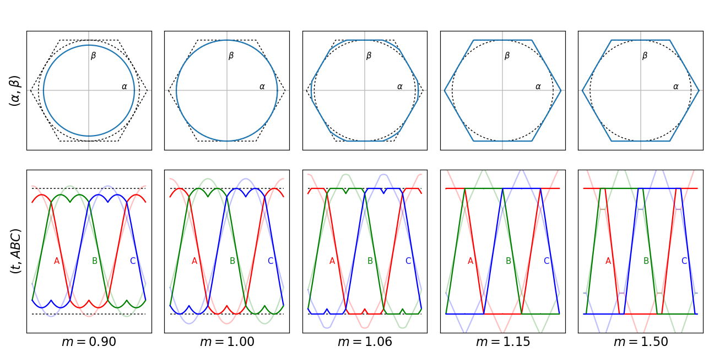
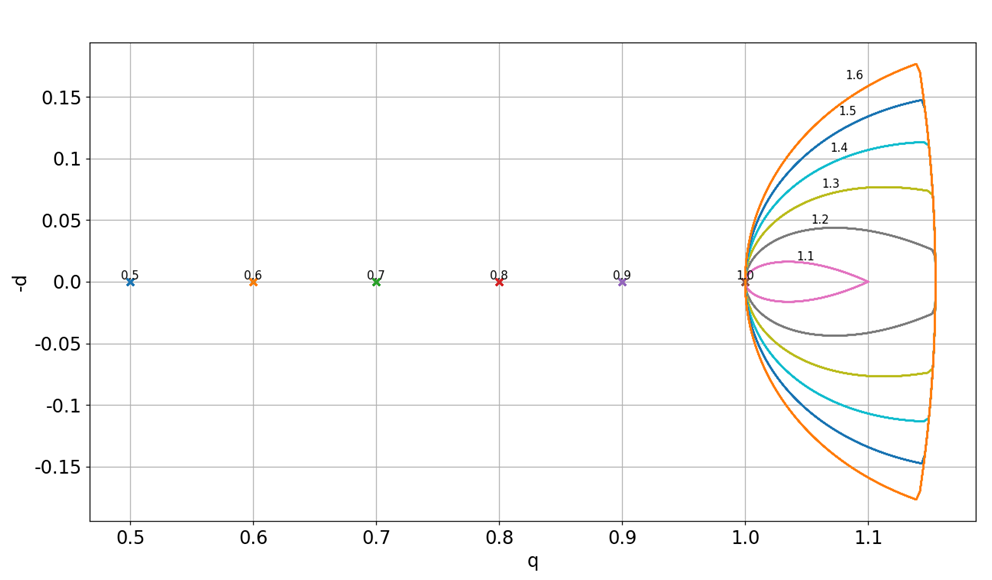
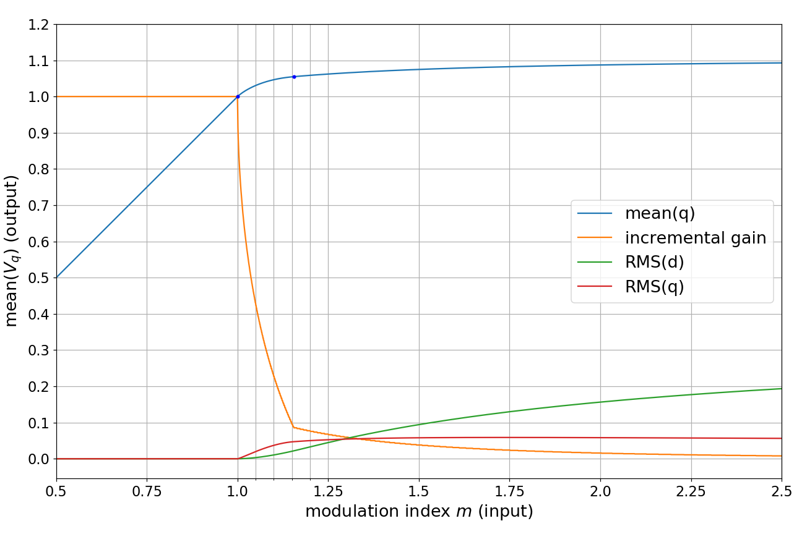
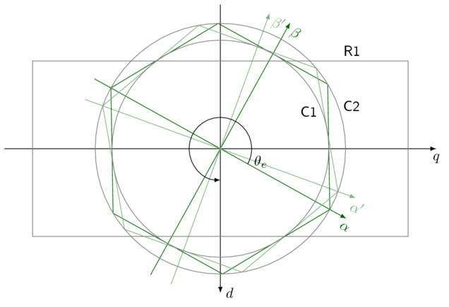

5.1.4. 过调制¶
过调制是一种利用三相调制提高电机驱动输出电压能力的方法。其实现方式是允许调制指数大于 1.0 时输出电压出现畸变。其收益包括潜在调速范围的轻微扩大，以及由于输出电压范围增大而带来的电流控制能力的略微提升。
图 5.12 展示了五个递增调制指数下的三相调制波形。

图 5.12 过调制示例 ——上方一行子图绘制的是静止（\(\alpha\beta\)）坐标系中的电压轨迹，下方一行则是电压轨迹随时间的变化。静止坐标系中的虚线圆表示调制指数 1.0（无畸变时的最大输出电压能力）；静止坐标系中的虚线六边形和时间序列图中的虚线表示包含畸变在内的最大电压能力。图中展示了五个不同的调制指数 m ，每列一个。相电压（线至中性点）时间序列波形以浅色显示。¶
5.1.4.1. 调制指数¶
调制指数表示输出幅值相对于 满电压跨度的归一化值。它是母线电压乘以每个半桥所施加的最大与最小允许占空比之差；例如，在以下情形中满电压跨度为 23 V = 25 V ×（95% − 3%）：
母线电压 25 V
死区 1%（例如周期 50 μs 时为 500 ns）
半桥最小占空比 3%（上桥臂晶体管 2%，下桥臂晶体管 96%）
半桥最大占空比 95%（上桥臂晶体管 94%，下桥臂晶体管 4%）
在本语境中，该定义可能与其他场合不同。在本三相调制分析中，调制指数表示相对于满电压能力的电压 （受占空比限制）。
调制指数 1.0 表示能够无畸变地获得一组三相线电压正弦波的最大可能电压幅值，如 图 5.12 中的点线圆所示。使用 零序调制 （即空间矢量调制）在此点以下时的输出时间序列波形，在以线至母线负端表示时呈现特征性的“双驼峰”形状，但线电压是正弦的。
5.1.4.2. 静止坐标系中的过调制行为¶
当调制指数超过 1.0 时，必须采取某种方法将每相的输出波形限制在允许的占空比范围内。有几种方法可以做到这一点：
最简单的方法是分别对每相占空比进行限幅。这会在 \(\alpha\beta\) 坐标系中产生一个距理想无约束值最近的可实现点。
这种限幅在时间序列上趋近于梯形波；在 \(\alpha\beta\) 坐标系中，电压轨迹被“挤压”到六边形限幅边界上。
另一种方法是用某个相同的比例因子对三相占空比组进行缩放 \(K = \frac{1}{\max(1,D_{\mathrm{span}})}\)，其中 \(D_{\mathrm{span}}\) 为三相组中最高与最低占空比之差； \(K\) 在过调制以下时为 1.0，过调制运行时小于 1.0。此时 \(\alpha\beta\) 坐标系中的可实现点与理想点保持相同的换相角。缺点是计算开销略大（涉及一次除法），且可达到的畸变程度较小。
还有一种算法方法描述于 Peng 等人的文章 中，称为 可实现参考法。该方法已被应用于 Briz 等人的文章中的三相调制。它需要电流控制器与限制输出占空比的饱和逻辑之间紧密协调。
可实现参考法看起来很有前景，但其在分析和实现上的复杂度使其未能在 MCAF 中采用。MCAF 中采用并展示于 图 5.12 的实现使用的是简单的逐相限幅。
5.1.4.3. 同步坐标系中的过调制行为¶
图 5.13 展示了变换到同步（dq）坐标系后的这些电压轨迹。在过调制以下，每条轨迹都是一个点：如果我们想要某个恒定调制指数 m，就能精确得到。一旦进入过调制，电压轨迹在 dq 坐标系中不再保持恒定值。这代表了以 d 轴和 q 轴畸变形式出现的电压谐波。这些谐波频率为电频率的 6 倍数的整数倍；例如，若产生 100Hz 的载波频率，则过调制谐波出现在 600Hz、1200Hz、1800Hz 等。由于过调制主要用于在更高转速下运行（此时反电动势要求更大），这些谐波通常高于电流控制器带宽，控制器无法将其衰减，因此它们确实会出现在电流波形和电压波形中，不过电机电感通常将其保持在相当低的水平。
{kind=link}

图 5.13 过调制在同步坐标系中的行为 ——以 0.1 为调制指数增量绘制的轨迹，每条标注了对应的调制指数。d 轴和 q 轴已归一化，使 1.0 表示调制指数 1.0。颜色仅用于区分各条轨迹，无内在含义。¶
我们还可以通过绘制一个完整换相周期内的平均行为随调制指数的变化来获得一些认识，如 图 5.14：
{kind=link}

图 5.14 同步坐标系中过调制的指标随调制指数的变化——这里展示了 dq 坐标系中所得轨迹的平均值及其增量增益（\(\frac{\partial}{\partial m}\)），以及一个换相周期内 d 轴和 q 轴电压的方均根（RMS）值。这展示了沿各轴畸变的大小随调制指数的变化。¶
当调制指数超过 1.0 时，有几点需要注意：
\(V_q\) 的平均值是调制指数的非线性函数；它确实会超过 1.0（这正是过调制的意义所在），但渐近地趋于一个最大值 \(\frac{2}{\sqrt{3}}\cdot\frac{3}{\pi} = 2\sqrt{3}/\pi \approx 1.1027\)
（其中 \(2/\sqrt{3}\) 为原点到六边形各点的距离， \(3/\pi\) 因子表示 \(\cos\theta\) 在范围内的平均值 \(\theta \in [-\frac{\pi}{6}, \frac{\pi}{6}]\)）
增量增益迅速下降，从 m = 1.0 时的 1 降至 m = 1.15 时的 0.1 以下。
d 轴畸变和 q 轴畸变都渐近地趋近于反映六步运行极端情形（三个半桥同时有源切换；这与大多数六步控制实现每次只操作两个半桥不同）的值，此时轨迹在 d-q 平面内形成一段 60° 的圆弧：
(5.19)¶\[\begin{aligned} V_{q,rms} &= \mathrm{RMS}\left(\tfrac{2}{\sqrt{3}}\cos \theta, -\tfrac{\pi}{6}, \tfrac{\pi}{6}\right) = \sqrt{\tfrac{2}{3} + \tfrac{\sqrt{3}}{\pi} - \tfrac{12}{\pi^2}} \approx 0.04627 \cr V_{d,rms} &= \mathrm{RMS}\left(\tfrac{2}{\sqrt{3}}\sin \theta, -\tfrac{\pi}{6}, \tfrac{\pi}{6}\right) = \sqrt{\tfrac{2}{3} - \tfrac{\sqrt{3}}{\pi}} \approx 0.33961 \end{aligned}\]q 轴 RMS 畸变迅速上升，在 \(m=1.15\)时达到约 0.0467，在 \(m=\sqrt{3} \approx 1.732\)附近达到约 0.0588 的最大值，随后在调制指数很大时渐近下降至 0.04627。
d 轴 RMS 畸变上升缓慢，在 \(m=1.15\) 时仅达到约 0.0208。
所有这些因素使过调制在中等调制指数下具有吸引力，而在极端调制指数下则不然。理论上可获得 10.27% 的最大电压提升，但为此需要极端的调制指数，因此在实际中，通过将最大调制指数限制在 1.05–1.25 范围内，我们大约只能获得 3%–7% 的“额外”电压能力。
5.1.4.4. 协调过调制与控制器限幅¶
\(V_q\) 平均值对调制指数的非线性依赖，使得将过调制应用于矢量电流控制器变得有些有趣。 图 5.15 展示了过调制在 dq 坐标系中可达到的限幅（本质上是一个随换相角旋转的六边形）以及 MCAF 电流控制器施加的限幅，即对各轴独立限幅的矩形区域。
{kind=link}

图 5.15 过调制中的相互制约限幅 ——dq 坐标系中的矩形 R1 表示电流控制器的输出电压限幅。六边形随换相角 \(\theta_e\) 旋转，表示通过三相调制可达到的物理限幅。圆 C1 表示调制指数 1，圆 C2 表示调制指数 \(2/\sqrt{3}\) ，即六边形限幅的外边界。¶
d 轴和 q 轴控制器限幅的选择很重要；具体建议见下文的实现说明。“角落”运行（两轴都取高值）很重要：两轴争夺电压，有效调制指数按正交相加。在该角落的运行很少见，通常仅限于电流控制器的暂态过程。要求 q 轴方向有更多电压是为了适应高速下的反电动势；d 轴电压的静态值仅由电感压降 \(\omega_eL_qI_q\) 和电阻压降 \(I_dR\) （仅在 d 轴电流非零时存在，用于弱磁运行或凸极转子的最大转矩/电流比控制——MCAF 目前均不支持）所需。
5.1.4.5. 实现说明¶
MCAF 的前向通路实现（见 图 4.2，最上方一行模块，包括电流控制器、逆 Park 和 Clarke 变换、母线电压补偿以及零序调制）仅依靠电流控制器和 ZSM 模块来提供限幅并防止溢出。只要电流控制器将其输出限制在矢量幅值 \(V_{dc}\)以下，后续模块就不会溢出。各轴的输出限幅是该轴的一个固定常数（\(K_d\) 和 \(K_q\)）乘以母线电压，因此这意味着 \(K_d{}^2 + K_q{}^2 < 1\)。
在 MCAF 软件中，电流控制器电压以相电压（线至中性点）表示，因此调制指数 1.0 对应的相电压为 \(V_{dc}/\sqrt{3}\)。如果 d 轴和 q 轴限幅以调制指数限幅表示 \(M_d\) 和 \(M_q\)，则 \(M_d = K_d \sqrt{3}\) 和 \(M_q = K_q \sqrt{3}\) ，且要求 \(M_d{}^2 + M_q{}^2 < 3\)。MCAF 中这些限幅的默认值为 \(M_d = 1.0, M_q = 1.15\)。（软件值为 \(K_d = 0.57735, K_q = 0.66395\) ，并以 MCAF_CURRENT_CTRL_D_OUT_LIMIT 和 MCAF_CURRENT_CTRL_D_OUT_LIMIT 的形式出现在 parameters/foc_params.h 中。）我们建议 d 轴调制指数限幅取 1.0，q 轴调制指数限幅保持在 1.05–1.25 范围内。这既留出了一定的设计裕量（\(1^2 + (1.25)^2 = 2.5625 < 3\)），又能通过过调制提供显著的电压能力。
5.1.4.5.1. 功能支持¶
过调制在 MCAF R1 中不存在，已在 MCAF R2 中加入。
5.1.4.6. 参考文献¶
Youbin Peng, D. Vrancic 和 R. Hanus, “Anti-windup, bumpless, and conditioned transfer techniques for PID controllers”， IEEE Control Systems, vol. 16, no. 4, pp. 48-57, Aug 1996.
F. Briz, A. Diez, M. W. Degner 和 R. D. Lorenz, “Current and flux regulation in field-weakening operation”， IEEE Transactions on Industry Applications, vol. 37, no. 1, pp. 42-50, Jan/Feb 2001.